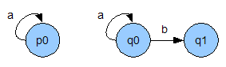

This document is not intend to be a tutorial or introduction to Abella. For that, we suggest you read the walkthrough of an example session in Abella. This document is intended as a reference for more details on specific features of Abella.
The syntax of formulas in Abella supports the following constructs,
forall A B C, ...exists A B C, ...nabla a b c, ...F1 /\ F2(and) F1 \/ F2(or) F1 -> F2(implies) pred t1 t2 t3(meta level predicate) {pred t1 t2 t3}(specification level predicate) {hyp t1, hyp t2 |- pred t3 t4 t5}(specification level predicate with context) {hyp t1, hyp t2, [hyp t3] |- pred t4 t5 t6}(specification level predicate that backchains on a formula in the context)
Nominal constants are denoted by n1, n2, ...
Names for objects such as theorems, variables, and constants can be
any character string which begins with a letter or one of the
symbols -/^><=`'?$~, followed by any other letters,
symbols from the previous list, digits, or symbols
from _*@+#~!&.
One way to think about the different level of predicates is that
everything inside of {...} is at the specification
level while things outside are at the reasoning level. For typical
reasoning tasks, almost every predicate will be at the specification
level, except for a few reasoning level predicates to describe the
structure of contexts for specification predicates.
Nominal constants and the nabla quantifier can be roughly thought of as representing "names."
% for single-line comments
and /* ... */ for multi-line comments. This
latter form of comments can be nested.
Theorem <THM-NAME> : <FORMULA>.Define <PRED> : <TYPE>, ..., <PRED> : <TYPE> by <CLAUSE> ; ... ; <CLAUSE>.
The define command can be used used with nabla in the definition head. See here for an example.
The Abella logic requires that all definitions satisfy a stratification condition. Various stratification conditions, all of which ensure the consistency of the Abella logic, are possible. The system does not current enforce any of these conditions since we are still experimenting with the best possible choice. Stratification is only a concern when definitions have an implication in their body. Thus, specific stratification conditions are noted with each such definition in the examples suite accompanying this distribution. The user is encouraged do identify, document, and adhere to such conditions in their own developments. A later version of the system will automate conformity to such conditions.CoDefine <PRED> : <TYPE>, ..., <PRED> : <TYPE> by <CLAUSE> ; ... ; <CLAUSE>.Definebut introduces co-inductively defined predicates.
As with theDefinecommand, theCoDefinecommand can be used with nabla in the definition head and all definitions must be stratified.Specification <QUOTED FILENAME PREFIX>..sigis automatically added to the provided prefix when looking for the specification signature and.modwhen looking for the specification module. If this command is used it must be the first command used in the development because the logic is essentially parameterized by this specification.Import <QUOTED FILENAME PREFIX>.Query <FORMULA>.
Note that this command is not complete in the sense that if a query fails, it does not mean that it is not provable. It only means that the proof search strategy used has failed to find a solution.Split <THM-NAME> as <NAME-1>, ..., <NAME-n>.Split <THM-NAME>.(forall N, {even N} -> {nat N}) /\ (forall N, {odd N} -> {nat N})this creates the theoremsforall N, {even N} -> {nat N}andforall N, {odd N} -> {nat N}.Set <OPTION> <VALUE>.
Option: subgoals
This option determines how subgoals are displayed. If set to 'on' then all subgoals are printed (default). If set to 'off' then no subgoals are printed.
For more fine-grained control, this option can be set to a numeric value. This value determines what level of related subgoals are displayed. For example, suppose we have the following subgoal hierarchy and we are currently working on subgoal 1.1.1.Subgoal 1.1.1 Subgoal 1.1.2 Subgoal 1.1.3 Subgoal 1.1.4 Subgoal 1.2 Subgoal 1.3 Subgoal 2If this option is set to 1 then only subgoals 1.1.2, 1.1.3, and 1.1.4 will be displayed. If this option is set to 2 then only subgoals 1.1.2, 1.1.3, 1.1.4, 1.2, and 1.3 will be displayed. If set to 3 then all subgoals would be displayed. Note that setting this option to 0 is equivalent to 'off', while setting it to a very large number is equivalent to 'on'.
Option: witnesses
This can be set to either 'on' or 'off' (default). If set to 'on' then a search witness is printed after each successful use of thesearchtactic.
Option: search_depth
This option determines the default depth used by thesearchtactic and all other tactics which implicitly usesearch. The initial value is 5.
Option: debug
This can be set to either 'on' or 'off' (default). If set to 'on' then some debugging information is displayed that may be useful, for example, to determine why unification fails.Show <THM-NAME>.Quit.Close <TYPE-1>, ..., <TYPE-n>.TYPE-1, ...,TYPE-n. See subordination for more information.
There are three categories of tactics.
induction on <NUM>.forall A B C, H1 -> H2 -> H3 -> Gtheinductiontactic allows you to induct on one ofH1,H2, orH3. The hypothesis to be inducted on must be inductively defined. The choice of induction is based on the number<NUM>. Applying theinductiontactic results in an inductive hypothesis being added to the current set of hypotheses. Specifics on this inductive hypothesis and how it relates to the goal are given in the section Inductive Restrictions.Abella supports nested induction through repeated calls to theinductiontactic. See the Inductive Restrictions section for more details.coinduction.forall A B C, H1 -> H2 -> H3 -> Gthecoinductiontactic allows you to use co-induction onG, which must be a coinductively defined predicate. Applying thecoinductiontactic results in a co-inductive hypothesis being added to the current set of hypotheses. Specifics on this co-inductive hypothesis and how it relates to the goal are given in the section Co-inductive Restrictions.intros.forall A B C, H1 -> H2 -> Gtheintrostactic introduces three new eigenvariablesA,B, andCand addsH1andH2to the hypotheses. The new goal isG.case <HYP NAME>.casetactic performs case analysis on a hypothesis. The tactic also removes the hypothesis from the hypothesis list. To keep it, use the keep flag, e.g.case H3 (keep).See here for an example of where keeping a hypothesis is convenient.search.search <NUM>.searchtactic tries to prove the current goal by repeatedly unfolding the goal and looking in the list of hypotheses. When the goal is a specification level judgment, this corresponds very much to the executable search semantics of the specification logic. The maximum depth of search is specified by<NUM>and defaults to 5.
The Set command can be used to display search witnesses on successful uses of this tactic. It can also be used to configure the default maximum search depth.apply <HYP NAME> to <HYP NAMES>.apply <HYP NAME> to <HYP NAMES> with X1 = T1, ..., Xn = Tn.apply <HYP NAME>.apply <HYP NAME> with X1 = T1, ..., Xn = Tn.applytactic applies a hypothesis of the formforall A1 ... Ai, nabla z1 ... zj, H1 -> ... -> Hk -> Gto argument hypotheses which matchH1, ...,Hk. The result is an instantiation ofG. Either or both of i and j may be zero, that is there need not be forall or nabla quantified variables. Thewithclause allows specific instantiations of any of the variablesA1...Aiandz1...zj. If thetoclause is omitted then the applied hypothesis is simply added as another hypothesis. This is useful for instantiating forall quantifiers in a hypothesis or for extracting individual results from a larger result proved with Mutual Induction. In the latter case, the Split command may provide a more convenient alternative.
A previously proved theorem can be used instead of the first hypothesis, and then this acts like using a lemma. This tactic also triggers some basic case analysis on the resulting hypothesis.
A useful feature of apply is that not all of its arguments have to be available. See the section Apply with Unknowns for more information.backchain <HYP NAME>.backchain <HYP NAME> with X1 = T1, ..., Xn = Tn.backchaintactics is dual to theapplytactic. That is, it takes a hypothesis of the formforall A1 ... Ai, nabla z1 ... zj, H1 -> ... -> Hk -> Gand tries to matchGwith the current goal. If the match is successful, the current goal is replaced with a subgoal for each ofH1, ...,Hk, and Abella applies thesearchtactic to each of these subgoals (thus finishing the trivial subgoals).unfold.unfoldtactic attempts to unfold the current goal by matching it against its possible definitions. The first definition to match is the one used.assert <FORMULA>.asserttactic changes the current goal to the given formula and once that is proven it comes back to the original goal, but with the given formula as a hypothesis. If the asserted formula can be solved by thesearchtactic, this is done so automatically.
This tactic is useful for when the prover is doing a poor job with, for example, thesearchtactic. Using assert allows you to "hold the prover's hand" to get to your desired goal. Future improvements to thesearchtactic will therefore lessen the need for this tactic.exists <TERM>.exists A, ...theexiststactic instantiatesAwith the given term.split.G1 /\ G2 /\ ... /\ Gnthesplittactic creates the n subgoalsG1,G2, ...,Gn. Ifsplit*is used instead ofsplit, the later subgoals will accumulate the previous subgoals as hypotheses.left.G1 \/ G2thelefttactic changes the goal toG1.right.G1 \/ G2therighttactic changes the goal toG2.permute (Z1 Z2 ... Zn) <HYP NAME>.permute (Z1 Z2 ... Zn).Z1, ...,Zn. The specified hypothesis is replaced by the permuted version. If no hypothesis is specified, then the permutation is applied to the goal.
inst <HYP NAME> with <VAR> = <TERM>.{... <VAR> ...}where<VAR>is a nominal constant, theinsttactic creates the hypothesis{... <TERM> ...}. Thus this tactic implements a meta-level substitution property of the specification logic. See subject reduction here for an example.cut <HYP NAME> with <HYP NAME>.cut <HYP NAME>.cut (<TERM>) from <HYP NAME> with <HYP NAME>.{L1, A |- C}and{L2 |- A}withL1andL2possibly empty, thecuttactic creates the hypothesis{L1, L2 |- C}. This corresponds to meta-level cut property of the specification logic. See subject reduction here for an example. When used without a 'with' argument, thesearchtactic is used to find possible hypotheses to cut from the given specification judgment. The last form of cut specifies an explicit term to be cut from the context, which is useful when the hypothesis to be cut with is normalized and its goal formula is not the desired one to be cut from the context.monotone <HYP NAME> with <TERM>.{L |- C}and the termK, themonotonetactic adds the new hypothesis{K |- C}to the current subgoal and creates a new subgoal with the obligationforall X, member X L -> member X K. This corresponds to meta-level monotonicity property of contexts in the specification logic. Typically, this tactic does not need to be used explicitly since Abella incorporates some notions of monotonicity into its unification procedures.
Abella's specification and reasoning logics are both simply-typed. All terms and formulas in these logics must be well-typed.
Abella has the following built-in types:
o - the type of formulas in the specification
logicolist - the type of lists of specification logic
formulasprop - the type of formulas in the reasoning
logicWhen Abella reads in a specification it expects to find a signature file which describes the types and constants used in the specification. For example, consider the following signature for a specification called "eval":
sig eval. kind tm, ty type. type app tm -> tm -> tm. type abs (tm -> tm) -> tm. type i ty. type arrow ty -> ty -> ty. type of tm -> ty -> o. type eval, step, nstep tm -> tm -> o.
This signature introduces two types called tm
and ty. It also introduces the
constructors app, abs, i,
and arrow for terms of those types. Finally it introduces
the
constructors of, eval, step,
and nstep for atomic specification logic formulas (which
will be used to represent judgments from the object system being
specified).
Restrictions
Types in the specification logic are not allowed to mention
olist or prop. Specification logic
quantification over type o is not allowed. Polymorphism
is not allowed in Abella. Thus all types must be fully inferred. In
order to achieve this, it may be necessary to introduce type
annotations on variables, e.g., using x:t to denote that
the variable occurrence x has the type t or
using x:t\ ... to denote that the abstracted
variable x has type t.
All specification logic types and constants are implicitly mapped to corresponding (and identically named) types and constants in the reasoning logic. Additional types and constants as shown below.
Kind nat type. Type z nat. Type s nat -> nat.
The types for defined predicates are specified when such predicates are defined. For example,
Define lt : nat -> nat -> prop by lt z (s N); lt (s M) (s N) := lt M N.
Restrictions
Quantification over type prop is not allowed.
Polymorphism is not allowed in Abella. Thus all types must be fully
inferred. In order to achieve this, it may be necessary to introduce
type annotations on variables, e.g., using (x:t) to
denote that a variable binding for x (say in a "forall")
has type t, using x:t to denote that the
variable occurrence x has the type t, or
using x:t\ ... to denote that the abstracted
variable x has type t.
Abella uses raising to encode dependency information between terms.
For example, in the term R N, R must be a
lambda term into which N will be substituted. However,
sometimes the term R has a vacuous lambda abstraction so
that it really does not depend on N. More generally, the
type of R may enforce this vacuity. For instance
if R has type tm -> nat and we know that
there is no way to construct a term of type nat using a
term of type tm, then we should be able to conclude
that R is a vacuous lambda abstraction. Subordination is
how Abella tracks such dependency and non-dependency information so
that vacuity information can be automatically used during reasoning.
For atomic types a and b, we say
that a is subordinate to b and write a
<| b if it is possible for a term of type a to
appear within a term of type b. Subordination is
necessarily reflexive and transitive. We extend subordination to
non-atomic types by saying that t is subordinate
to s if the target type of t is subordinate
to the target type of s.
Abella automatically computes the subordination relation between types
by examining the types of declared constants. When Abella sees a
constant declared with type t1 -> ... -> tn -> a
where a is an atomic type, it infers that we must
have t1 <| a, ..., tn <| a, and it examines
each of t1, ..., tn for further
subordination constraints.
The Close command declares that the set of
subordinates of the provided types is fixed. This allows Abella to
determine that certain dependencies are vacuous. In particular, if the
type a is not subordinate to the
type b where b is closed then Abella knows
that no term of type a can appear inside a term of
type b. Furthermore, Abella will not allow a degenerate
type like a -> b to even be formed. Note that for a type
to be declared closed, it must be that all of its subordinates are
also closed due to the transitivity of subordination.
Consider the following commands as an example:
Kind tm, ty type. Type app tm -> tm -> tm. Type lam ty -> (tm -> tm) -> tm. Type i ty. Type arrow ty -> ty -> ty. Close tm, ty.
From these commands, Abella infers the following subordination
relation: ty <| ty, ty <| tm, and tm
<| tm. Thus, Abella knows that a term of type ty
can appear inside terms of type tm and ty,
whereas a term of type tm can appear inside terms of
type tm, but not inside terms of type ty.
The types o, olist, and prop
cannot be declared closed for modularity reasons: we always want to be
able to add more predicates and definitions.
In addition to the treatment of the specification logic via {_
|- _}, Abella assumes the following predefined constants
and definitions.
Type nil olist. Type :: o -> olist -> olist. Define member : o -> olist -> prop by member A (A :: L); member A (B :: L) := member A L.
Note that :: is treated as infix.
Inductive restrictions are represented by * (smaller)
and @ (equal). They are used to track the size of
inductive arguments rather than using explicit numeric values. For
example, suppose we apply induction on 1. when trying to
prove the following subject reduction theorem,
============================
forall E V T, {eval E V} -> {of E T} -> {of V T}
We will get the following proof state.
IH : forall E V T, {eval E V}* -> {of E T} -> {of V T}
============================
forall E V T, {eval E V}@ -> {of E T} -> {of V T}
Here we have an inductive hypothesis where the inductive argument is
flagged with *. This means that we can only apply that
hypothesis to an argument which also has the *.
Because * means smaller, in order to get an argument with
a * we must perform case analysis on an argument that is
"equal" which we denote by @. Thus the above proof
proceeds by first doing "intros." and then case analysis on {eval E
V}@. This will give us two subgoals, one which is trivial
and the other which has hypotheses tagged with * and thus
eligible for use with the inductive hypothesis.
Abella supports nested induction through repeated calls to the
induction tactic. For example, suppose we have a goal
such as
outer -> inner -> result.
If we apply induction on 1 followed by induction
on 2 we get the following proof state.
IH : outer * -> inner -> result IH' : outer @ -> inner ** -> result ============================ outer @ -> inner @@ -> result
The outer inductive hypothesis IH can be used like normal.
It ignores the flags @@ and **. The inner
inductive hypothesis IH' checks two things when applied:
that whatever is given for outer has a tag of
@ or *, and whatever is used for inner has a
tag of **.
See here for a real usage of nested induction.
When the backchain tactic is used with an inductive
hypothesis, the generated subgoals may have goals containing inductive
restrictions. Such inductively restricted goals can only be proved by
matching them with a corresponding hypothesis (via
the search tactic). In all other ways, the goals are
inert.
Co-inductive restrictions are used to ensure that a co-inductive hypothesis is used correctly. That is, to ensure the co-inductive hypothesis can only be used to establish results about recursive calls to the co-inductive predicate to which co-induction is applied. This is best understood through an example.
Suppose we want to reason about a labeled transition system. As a simple example, we will take the following system.

We assume that the rules of this system are encoded in a predicate
step P A Q which holds if we can move from
state P to state Q via the
label A. The exact definition is therefore,
Define step p0 a p0. Define step q0 a q0. Define step q0 b q1.
Suppose we want to show that the state q0 can simulate,
or always act like, the state p0. We formalize this
notion in the following co-inductive definition of sim P
Q, which holds when P is simulated
by Q.
CoDefine sim P Q := forall A P', step P A P' -> exists Q', step Q A Q' /\ sim P' Q'.
Now when we are conducting a proof of sim p0 q0 we will
begin by applying the coinduction tactic which results in
the following proof state.
CH : sim p0 q0 + ============================ sim p0 q0 #
The restriction + on CH means that it cannot
match any goal unless that goal also has the +
restriction. The # on the goal indicates that when this
goal is unfolded, the recursive calls will be tagged
with +. The next step in the proof is to apply
the unfold tactic which results in the following.
CH : sim p0 q0 + ============================ forall A P', step p0 A P' -> exists Q', step q0 A Q' /\ sim P' Q' +
Notice that the recursive call sim P' Q' is tagged
with + thus it will be able to match with CH
when the search tactic is eventually used. Before we can
apply search, however, we must apply
the intros tactic and then consider all possible cases
for step p0 A P'. The only case is when A
is a and P' is p0, which
results in the following state.
Variables: A, P' CH : sim p0 q0 + ============================ exists Q', step q0 a Q' /\ sim p0 Q' +
The proof is then finished by the search tactic which
will pick Q' as q0 and deduce
step q0 a q0 and sim p0 q0, by matching the
latter with CH.
There is a duality between inductive and co-inductive restrictions:
apply tactic. An
inductively restricted goal (which arises from backchain
with an inductive hypothesis) can only match a corresponding
hypothesis and is otherwise inert.
backchain tactic. A co-inductively restricted
hypothesis (which arises from apply with a co-inductive
hypothesis) can only match a corresponding goal and is otherwise inert.
To use a lemma, prove it as a theorem and then refer to it by name in
another proof using the apply tactic. For example,
Theorem my_lemma : ... ... Theorem my_theorem : ... ... apply my_lemma to H3 H5. ...
Abella supports mutual induction on specification judgments. We will illustrate this ability using the following specification.
nat z. nat (s X) :- nat X. even z. even (s X) :- odd X. odd (s X) :- even X.
Suppose we want to show that everything recognized
by even is also recognized by nat, and
similarly for odd. Although, in this case, these results
could be established independently, we will use mutual induction. In
order to do this, we state a single theorem which is the conjunction
of the mutually recursive theorems we want to prove.
Theorem even_odd_nat :
(forall X, {even X} -> {nat X}) /\
(forall X, {odd X} -> {nat X}).
We can now call the induction tactic and pass it an
induction argument for each of the mutually recursive theorems. In
this case we have two such theorems and we want to induct on the first
argument in each. Thus we call induction on 1 1. which
results in the following.
IH : forall X, {even X}* -> {nat X}
IH1 : forall X, {odd X}* -> {nat X}
============================
(forall X, {even X}@ -> {nat X}) /\ (forall X, {odd X}@ -> {nat X})
We now have an inductive hypothesis for each of the mutually recursive
theorems, and these inductive hypotheses share the same inductive
restriction. At this point we can call split and proceed
to handle each of the two sub-theorems individually. The complete
proof script is as follows.
induction on 1 1. split.
intros. case H1.
search.
apply IH1 to H2. search.
intros. case H1.
apply IH to H2. search.
Finally we may find it useful to state our theorems independently so they are easier to apply as lemmas. Thus we may state
Theorem even_nat : forall X, {even X} -> {nat X}.
And we can prove this by using apply with the mutual
induction version. We apply it to no arguments, which has the effect
of just introducing the lemma as a hypothesis. Thus the full proof is
as follows.
apply even_odd_nat. search.
Alternatively, we can use the Split command to directly split the theorem.
Split even_odd_nat as even_nat, odd_nat.
This automatically creates and proves the following theorems:
Theorem even_nat : forall X, {even X} -> {nat X}.
Theorem odd_nat : forall X, {odd X} -> {nat X}.
The apply tactic allows you to leave some arguments
unspecified by replacing them with an underscore. For example,
in this
type uniqueness development we at one point have roughly the proof
state,
Variables: L, E, T1, T2, U, R, T, U'
IH : forall L E T1 T2, ctx L -> {L |- of E T1}* -> {L |- of E T2} ->
T1 = T2
H1 : ctx L
H4 : {L, of n1 T |- of (R n1) U}*
H5 : {L, of n1 T |- of (R n1) U'}
============================
arrow T U = arrow T U'
Now we would like to apply IH to H4 and
H5, but for this we would need a hypothesis which says
ctx (of n1 T :: L). We could assert this hypothesis and
the proof of it would follow from ctx L. Another option
is to say apply IH to _ H4 H5. The prover will then guess
what needs be proved for the unknown hypothesis and attempt to prove
it using search. If this fails, the current subgoal will
be delayed and the unknown hypothesis will become the current goal.
accum_sig and accumulate. The
following example shows how a specification of evaluation
called eval might be based on a specification of terms
called terms.
sig eval. accum_sig terms. type eval tm -> tm -> o. ...
module eval. accumulate terms. eval zero zero. ...Restriction: If the module
Ext accumulates the
module Base, then the signature Ext must
accum_sig the signature Base.
It is possible to compile Abella theorem files so that they may be imported by other theorem files. This allows some degree of modularity and prevents possibly expensive re-checking of theorems in a large development.
Theorem files can be compiled using the -c command line flag as follows.
% abella foo.thm -c foo.thc -o foo.out
This compiles the definitions and theorems in foo.thm into the file
foo.thc, while redirecting the normal Abella output foo.out. This thc
file can now be included in another theorem file
using Import command as follows.
Import "foo".
Restrictions:
In order for development Ext to import
development Base:
Ext's specification must be a superset of Base's
specification and
o) is declared in Base, its clauses
cannot be extended in Ext's specification.
Currently there is a
fork of ProofGeneral
which supports Abella. To get it working, you need to make sure that
you have no other versions of ProofGeneral installed (conflicts may
occur and the commands will not work properly for Abella files) and
checkout the abella branch of this repository.
git clone https://github.com/abella-prover/PG cd PG git checkout abella
It is advised to run git pull every now and then to keep it updated.
Then, edit your ~/.emacs
or ~/.emacs.d/init.el file and add the following:
(defconst proof-site-file
(expand-file-name "path/to/PG/generic/proof-site.el"))
(defconst lprolog-file
(expand-file-name "path/to/PG/abella/lprolog.el"))
(defmacro delete-mappings (alist key)
`(while (assoc ,key ,alist)
(setq ,alist (delq (assoc ,key ,alist) ,alist))))
(when (file-exists-p proof-site-file)
(delete-mappings auto-mode-alist "\\.thm\\'")
(setq proof-splash-enable nil)
(setq proof-three-window-enable nil)
(setq proof-three-window-mode-policy 'horizontal)
(setq proof-output-tooltips nil)
(load-file proof-site-file))
(when (file-exists-p lprolog-file)
(autoload 'lprolog-mode lprolog-file "Major mode for Lambda Prolog" t)
(delete-mappings auto-mode-alist "\\.mod\\'")
(add-to-list 'auto-mode-alist '("\\.mod\\'" . lprolog-mode))
(add-to-list 'auto-mode-alist '("\\.sig\\'" . lprolog-mode)))
The paths on the second and fourth lines should be modified accordingly.
Once everything is set up, you can open Emacs and load a thm
file. Note that ProofGeneral will not work on Emacs in terminal mode (i.e.,
do not execute Emacs with the -nw option) because the key
binding C-RET is not recognized by most terminal emulators.
When a command is executed, you will see the result in a new buffer on the right side of the screen.
Some basic commands for proof navigation are:
C-c C-RET Execute the proof script up to point (the cursor).
C-c C-n Execute the next command after the compiled region.
C-c C-u Undo the last command.
For more information on ProofGeneral, please check its user manual.